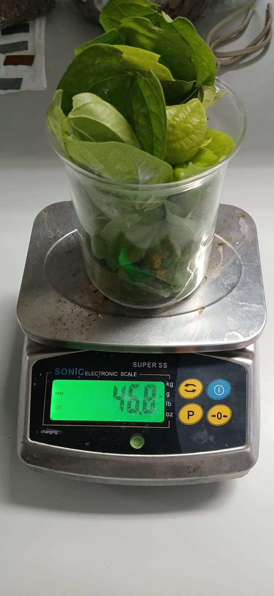
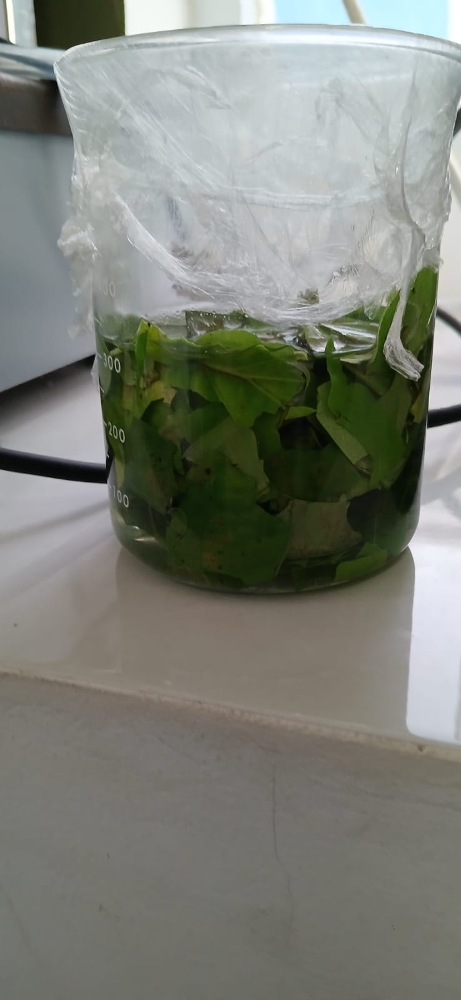
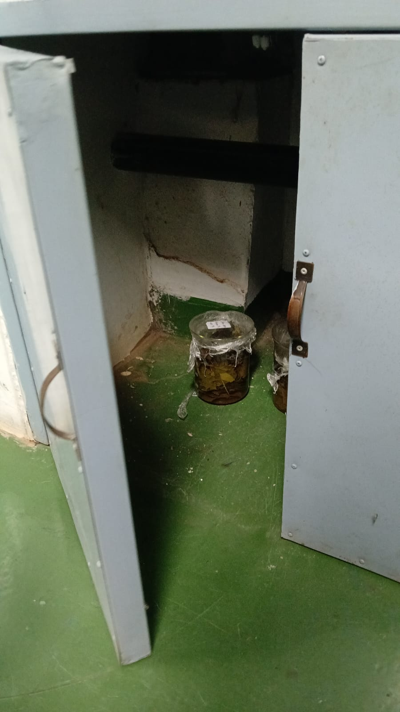

01Preparation
Choose high-quality betel leaves as the primary raw material.

01Choose high-quality betel leaves as the primary raw material.

02Soak betel leaves in distilled water to extract flavonoids

03Store the betel leaf extract in a clean, sealed container to maintain its quality.